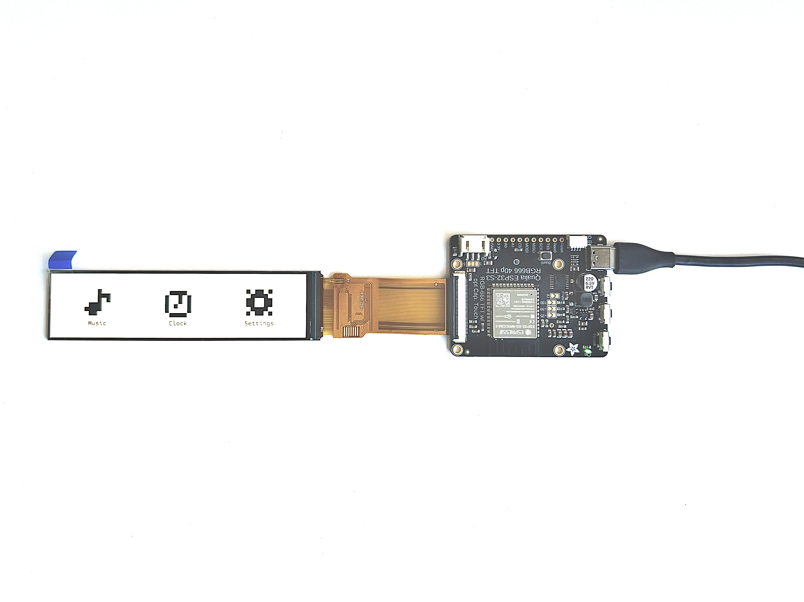

Journal 2
A first look at Python, and an MP3 player in progress

First class
This week was our first introduction to Python. I went in curious, and a little unsure, since programming has always seemed like something closer to maths than to the kind of work I usually do. We started small: printing a line of text. None of it was complicated, but there was a quiet satisfaction in typing a few lines, running them and seeing the result appear exactly as written. It felt less like solving an equation and more like picking up the basics of a new language.
Structure on the page
What I noticed most was how readable Python is. I expected something dense and cryptic, but much of it reads close to plain English. Indentation is not just for neatness; it is part of how the code works. Coming from a design background, I found that interesting. The way the code is laid out on the screen reflects how it behaves, which makes writing it feel, in a small way, like a design decision of its own.
The code becomes something I can press and hear, rather than something that only exists on a screen.
From screen to circuit
Alongside the class, I have started using CircuitPython, a version of Python made for small microcontroller boards, to build a simple MP3 player. The process is more direct than I expected. The board appears on my laptop like a USB drive, I edit a file called code.py, save it, and the board runs it right away. A few lines can read a button, load a track and send the sound to a speaker. The code becomes something I can press and hear, rather than something that only exists on a screen. There has been plenty of trial and error so far, loose wires and error messages I do not fully understand yet, but each small step forward makes the next one feel more manageable.
Looking inside
What stays with me is the connection between the digital and the physical. Most of the devices I use every day are closed boxes; I press a button and something happens without much thought about why. Building even a basic player changes that slightly. A play button now reads to me as a short sequence of instructions: check the input, find the file, start playback. It links back to the questions in my last entry about the systems that stay hidden behind what we see. Learning Python feels like a modest way of looking at those systems more closely. I am only at the beginning, but I am interested to see where it leads.